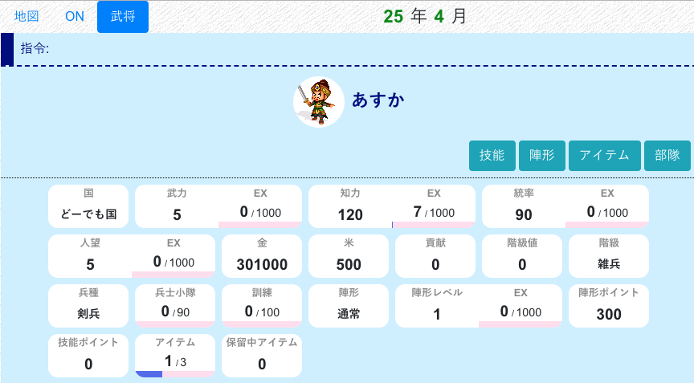
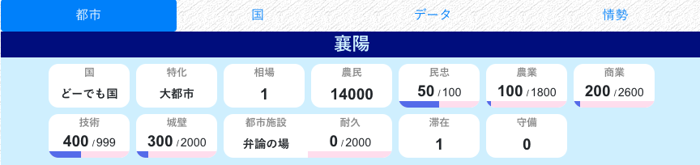
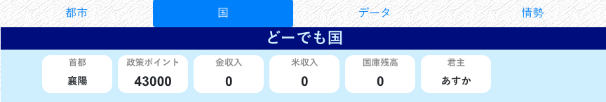

概要
新規登録を終えた後、またはログインした後、ステータス画面に移動します。
ここでは、武将、都市、国の持つパラメータについて、簡単に説明します。
パラメータはたくさんあります。ここで全部覚える必要はなく、ガイドの続きのページでも都度説明します。気楽に読み流してください。
最初にまとめて知るものとしてあまり重要ではないパラメータについては、名前をかっこで囲んでいます。適宜読み飛ばして、後で参照するなりしてください。
武将

武将のパラメータは、PCでは画面左上、スマホでは画面最上部にある「武将」タブより確認できます。
武力
武将の能力です。これが高いほど、戦闘で強くなります。通常は統率と併用します。
知力
武将の能力です。これが高いほど、内政が早く進みます。
統率
武将の能力です。これが高いほど、たくさんの兵士を雇えます。雇える兵指数の最大は、統率と同じです。
人望
武将の能力です。これが高いほど、民忠を早く上げられます。使い道ははっきり言ってないです（最序盤では必要とされますが、本当に最序盤だけです）。
出身で武家・文官を選んだ場合、人望は最低の 5 になっているはずです。
金
武将の所持する金です。内政、軍備などあらゆることに使えます。
（米）
武将の所持する米です。はっきり言って、持久戦にならない限り 20000 を超える分は持っているだけ無駄です。都市の相場が 1.2 またはそれに近い値になっていたら、早々に米売買コマンドで売って金にかえましょう。
（貢献、階級値、階級）
内政など国に貢献するコマンドを実行すると、貢献が上がります。（コマンド一覧も参照）
毎年 1、7 月になると、貢献は 0 となり、もとあった貢献は階級値に加算されます。
階級値が一定の値に到達すると、階級が上がります。
（収入）
毎年 1 月には金、7 月には米の収入を得ます。収入は、階級が高いほど一度にたくさんもらえます。収入は通常は階級に応じた一定の寮となりますが、国全体の収入が少ない場合は、貢献に応じて変動することがあります。
詳しい説明は収入にあります。
兵種
武将の兵種です。戦闘時の強さに影響します。
徴兵することで変更できます。
兵種に詳しい説明がありますが、ガイドの戦争編でも説明します。
兵士小隊
武将の兵士小隊数です。他の三国志NETでは「兵士数」と呼ばれます。文字通り、兵士の数で、武将の戦闘におけるヒットポイントです。上限は武将の統率です。
徴兵することで増やすことができます。
（訓練）
武将の訓練値です。これが高いほど戦争の時に有利になりますが、0 のまま戦争する人も多いです。
（陣形）
※第0.7期現在、陣形はただの飾りでしかないので気にしなくて大丈夫です
武将の戦闘時に使用する陣形です。陣形には陣形経験値、陣形レベル、陣形ポイントが存在します。
- 陣形の種類、レベルにより、戦闘時に特定の補正がかかります
- 陣形経験値がたまると陣形レベルが上がり、陣形が強化されます
- 陣形そのものは、陣形ポイントを使って増やします
陣形に詳しい説明があります。
（技能ポイント）
武将は、出身に応じて技能を持ちます。武家には武家向けの、文官には文官向けの技能が用意されています。
技能ポイントが 10 など決まった値に到達すると、新しい技能を獲得することができます。
出身に詳しい説明がありますが、ガイドの内政編でも技能の獲得について説明します。
（アイテム）
武将の持っているアイテムです。所持数には上限があります。現在持っているアイテムと効果は、「アイテム」ボタンをクリックすることで確認できます。
売買、内政などで手に入れます。アイテムに詳しい説明がありますが、ガイドの内政編でも説明します。
他の三国志NETでいう「武器」「書物」をさらに強化したシステムです。
都市

（特化）
都市には特化があり、特化ごとに内政の最大値が変化します。基本的には無視します。
農民
都市の人口です。これが高いほど、1、7 月の金・米収入が増えるだけでなく、たくさんの兵士を徴兵できます。
おもに、民忠を上げることで回復します。
民忠
都市の民忠です。これが 50 より高いほど、1、7 月に農民が増えます。逆に低いと、農民は減ってしまいます。
おもに、徴兵の時に減り、米施しによって回復します。
農業、商業
都市の農業と商業です。これが高いほど、1、7 月の金・米収入が増えます。
技術
都市の技術です。これが高いほど、高級兵種が雇えるだけでなく、城壁を守る兵士の強さも変わります。
城壁
都市の城壁です。これが高いほど、落城しにくくなります。城壁は、戦争において、都市のヒットポイントに相当します。
（都市施設）
都市に固有の施設です。耐久を上げることによって、効果を発揮します。種類によって、効果が変わります。
都市施設に詳しい説明があります。
守備
都市を守備している武将数です。戦争において都市に攻め込まれたとき、守備があると守備武将が応戦します。（守備武将がいなければ城壁との戦闘になります）
国

（政策ポイント）
国の持つ政策ポイントです。政策開発コマンドによって上げることができます
（金・米収入）
国の直近の収入量です。
（国庫残高）
国庫の残高金です。
このあと
序盤にやること、内政について説明します。ガイド（内政編）へ移動します